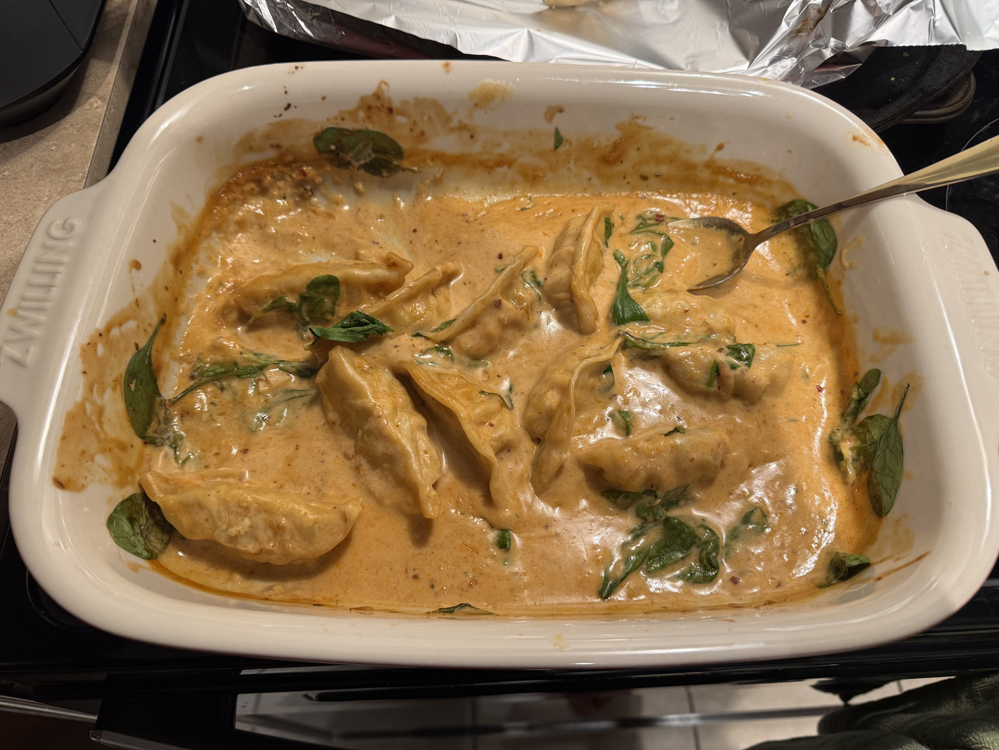

Home
Easy Oven Dumplings

Description
Dumplings in tangy maple sauce. Quick and easy weeknight meal.
Prep Time: 5 min Cook Time: 30-40 min
Ingredients
- 16-18 preferred frozen dumplings
- 2 cups baby spinach
- Green onions and chili oil, to serve
Sauce
- 1 tbsp minced garlic
- 1 tbsp puree ginger
- 1/4 cup red curry paste
- 2 tbsp soy sauce
- 1 tbsp rice vinegar
- 2 tbsp maple syrup
- 1 can coconut milk (398ml)
Steps
- Set oven to 375F
- Combine all ingredients in a oven dish until the sauce is homogenous
- Cover with foil and cook in oven for 30 to 40min
-
- Serve with white rice and garnish with green onions and chili oil